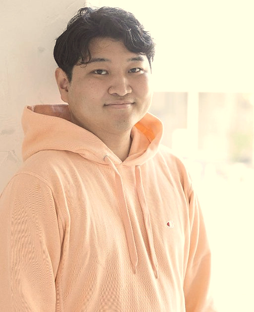

問い合わせ対応・予約受付・ホームページ、見積やメール、自社様式の書類——散らばった業務を整理して、あなたにちょうどの仕組みに。既製ソフトに合わせるのではなく、AIで早く・安く。聞いて、形にして、現場で回るところまで鈴木が担当します。

行政・政策・法人運営の現場を経て、いまはAIで業務を整理・自動化する仕事をしています。提案書を渡して終わりでも、言われたものを作るだけでもなく、聞いて・形にして・現場で回るところまで。相談から実装まで、私がひとりで担当します。